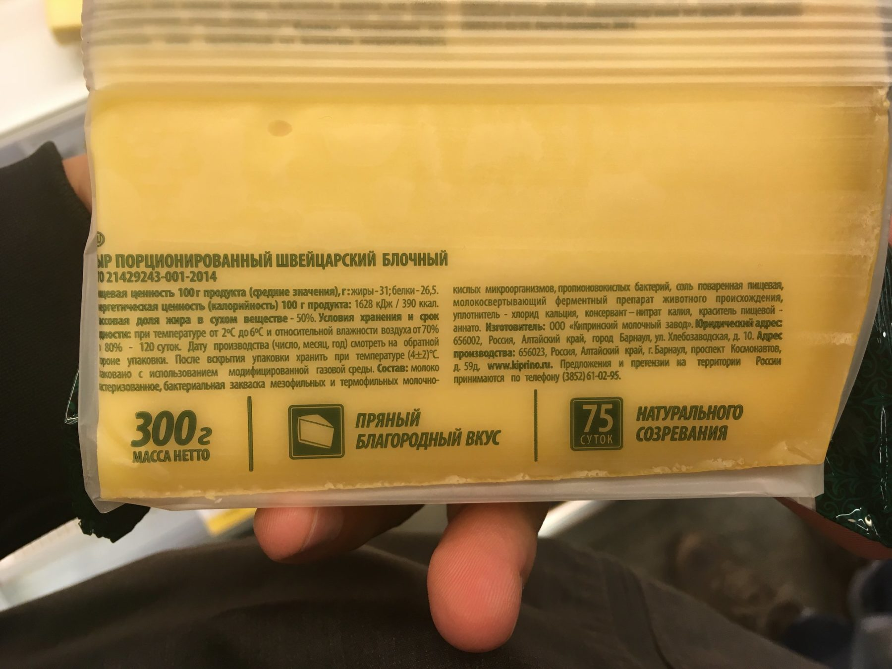

Этот пост об осознанном питании, и я ни на что не намекаю.
При промышленном производстве сыра для свёртывания молока используют специальные вещества, ферменты.
Эти ферменты можно получить несколькими путями: с использованием плесневых бактерий и грибов, или из сычуга, их так и называют — сычужный фермент.
В составе сыра, в котором использовали сычужный фермент, обычно игриво пишут «ферментный препарат животного происхождения». Ну, молоко же тоже животного происхождения.
Сычужный фермент содержится в желудках новорожденных телят, он нужен им, чтобы усваивать молоко матери. Поэтому добывают его для производства такого вкусного сыра очень просто.
Пока телятам не исполнился один месяц и количество фермента максимально, телят убивают, вынимают желудки, надувают их, и сушат в таком виде. Когда желудок высох, его перетирают в порошок и, вуаля, ваш Швейцарский почти готов. Осталось только открыть бутылочку белого сухого. Пряный благородный вкус из желудка новорожденного телёнка.
